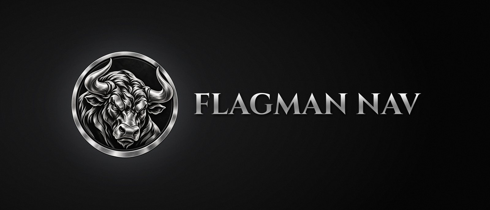
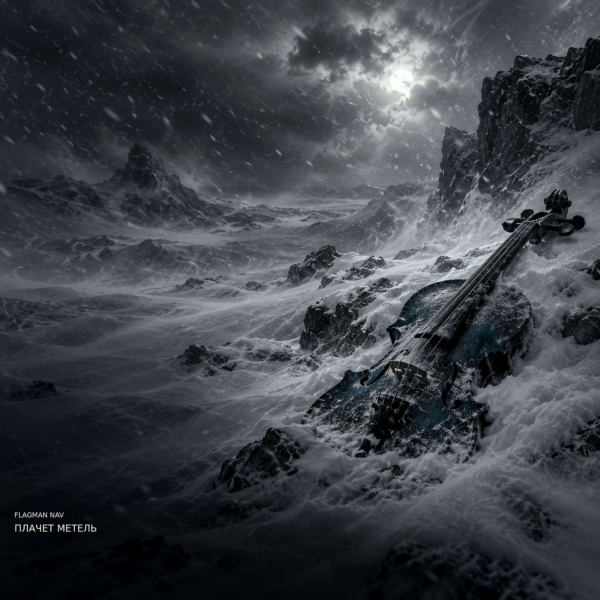
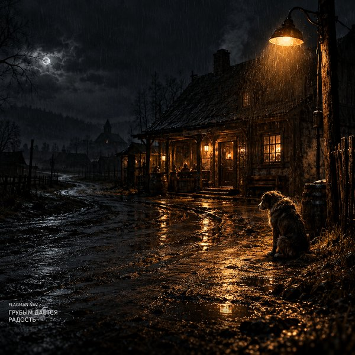
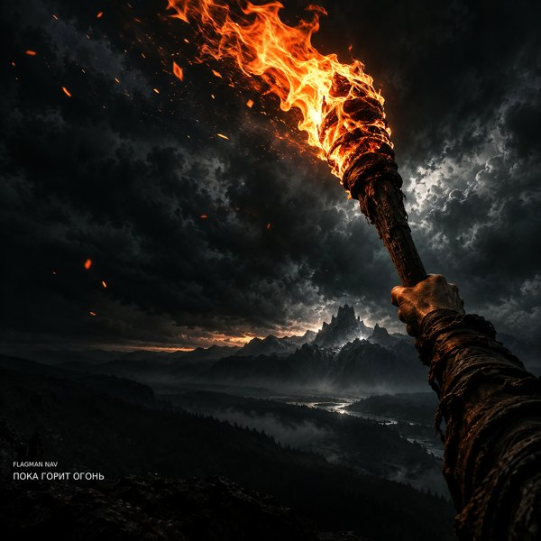

Русская поэзия без хрестоматийного глянца: металкор и альт-метал на русском — на стихи русских поэтов и на свои тексты.

Анонс · 30 ноября 2026
Гамаюн. Безвременье
Глава 11. Атмосферный мелодичный дум-метал: память веков и пророчество о повторяющейся беде.
Анонс · 19 декабря 2026
Дети древних звёзд
Глава 17 единой истории. О мире, привыкшем терпеть, памяти о внутренней свободе и надежде на возрождение. От мёртвого поля и чужой власти — к звёздному небу и городу из света.
Клип и три Shorts запланированы на YouTube; до даты выхода доступ ограничен. Слова и замысел — Flagman NAV. Музыка и вокал созданы с помощью Suno по заданию автора, изображения — ChatGPT ImageGen.
Анонс · 26 декабря 2026
Звезда
Глава 19 единой истории. Первопроходец в ледяной ночи: впереди нет готовой дороги, лишь звезда как внутренний ориентир. Песня о силе и верности своему пути из альбома «Мир таинственный».
Клип и три Shorts запланированы на YouTube; до даты выхода доступ ограничен. Слова и замысел — Flagman NAV. Музыка и вокал — Suno по заданию автора, рисунки — ChatGPT ImageGen.
Анонс · 30 декабря 2026
Весна, которая не знает лета
Глава 20 единой истории, из альбома «Мир таинственный». О близости, которая ускользает, и надежде на тепло среди внутренней зимы. После «Звезды» герой встречает её — весну, за которой остаётся зима.
Клип и три Shorts запланированы на YouTube; до даты выхода доступ ограничен. Слова и замысел — Flagman NAV. Музыка и вокал — Suno по заданию автора, рисунки — ChatGPT ImageGen.
Анонс · 20 января 2027
Владыка Вселенной
Глава 26 · Космический эпилог после «Полыньи». Рождение и угасание миров, круг жизни и свет исчезнувшей звезды, который помогает обрести свой путь.
Клип и три Shorts запланированы на YouTube; до даты выхода доступ ограничен. Слова — Flagman NAV; вступление — по мотивам стихотворения Владимира Маяковского «Послушайте!». Музыка и вокал — Suno по заданию автора, рисунки — ChatGPT ImageGen.
Релизы

Грубым даётся радостьСингл · 2026
Пока горит огоньСингл · 2026Слушать — на стриминговых площадках, ссылки на странице каждого релиза.
Скоро
- 07.11Мир таинственныйальбом и клип
- 11.11Запертые дорогиклип
- 14.11Пока сердце не немоклип
- 18.11Синий огоньклип
- 21.11Пляски адаклип
- 25.11Разгорелся пожар голубойклип
- 28.11Вороньёклип · глава 10
- 30.11Гамаюн. Безвременьеклип · глава 11
- 02.12Стражи забытых имёнклип
- 05.12Край ты мой заброшенныйклип
- 19.12Дети древних звёздклип · глава 17
- 26.12Звездаклип · глава 19
- 30.12Весна, которая не знает летаклип · глава 20
- 20.01.27Владыка Вселеннойклип · глава 26
После альбома новые клипы выходят на YouTube по средам и субботам — главами одной истории. «Гамаюн. Безвременье» — внеплановая глава в понедельник, 30 ноября. Ссылки ведут на загруженные клипы; до даты выхода доступ к отложенным видео ограничен.
О проекте
Русская поэзия без хрестоматийного глянца. Есенин — с позиции не «нежного», а «грубого»: ведь «коль черти в душе гнездились — значит, ангелы жили в ней».
Flagman NAV — металкор и альт-метал на русском: песни на стихи русских поэтов и на собственные тексты. Стили специфические, тяжёлые для восприятия, на любителя — но именно такая музыка помогает мне идти по жизни.
В песнях на стихи русских поэтов тексты — авторская переработка. Полностью аутентичных текстов стихотворений в треках нет: возможны сокращения, перестановки строф, изменения и авторские дополнения. Музыка и вокал создаются с помощью генеративного сервиса Suno по замыслу, текстам и заданию автора.